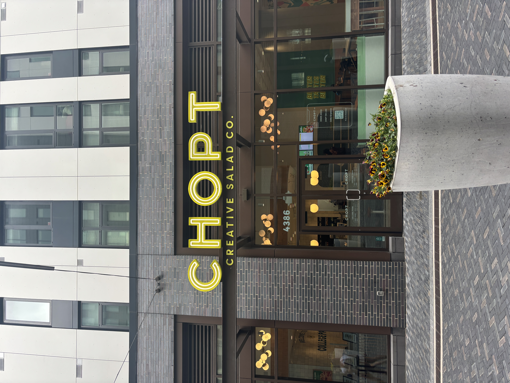
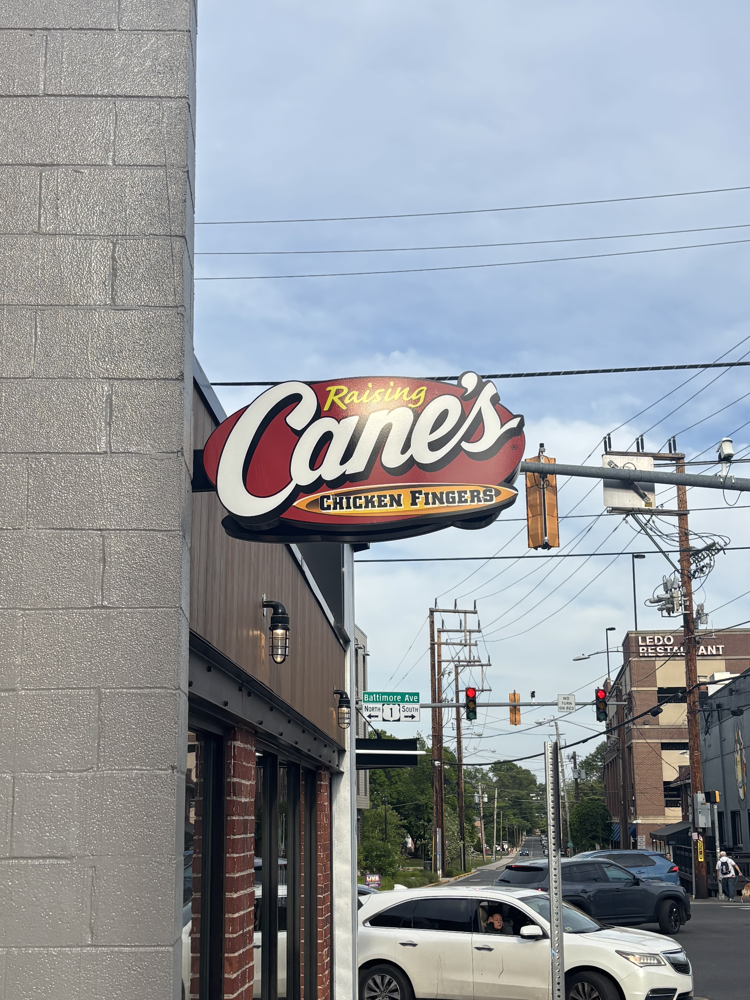
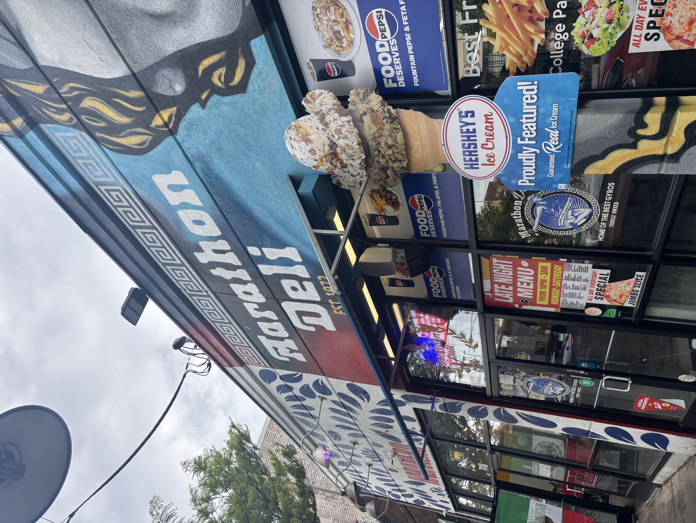

Redevelopment vs Historical Identity: How the City of College Park Balances the Old with the New
By: Amelia Twyman
May 5, 2026
Traffic cones. Bulldozers. Bright orange barricades. It seems as though a different construction project awaits around every corner on the University of Maryland campus and in the surrounding city of College Park.
Like most buzzing college towns in the U.S., UMD’s is in a constant state of redevelopment, changing and growing with the students and residents who cycle through. Many of the buildings and businesses that were open ten years ago are no longer around today, while others have been rooted from their original spots and moved elsewhere to make room for new projects.
Still, though, a few long-time establishments remain, those signature places that have been passed down through the generations and which continue to shape College Park’s identity.
“Redevelopment, it’s a double edged sword,” said city economic development coordinator Rehanna Barre. “You want the city to thrive and you want these big, new exciting things, but you have to be careful, because you can lose what made the city so great in the first place.”
Restaurants, businesses and housing units have been cycling in and out of the city for decades. But only recently has local redevelopment picked up at a rapid and deliberate pace, thanks to the creation of groups such as the Terrapin Development Company and special initiatives like “Greater College Park.”
Both of these photos feature a strip of restaurants located along the corner of Route 1 and Hartwick Road in College Park. One was taken in 2016, and one was taken in 2024. Slide to see how this strip of businesses has changed (or, in some cases, remained the same) over time.
This Google Map contains a marker for all of the former and current businesess and buildings mentioned in this story. Just drag your mouse to the place that interests you!
Jointly founded in 2017 by UMD and the University of Maryland College Park Foundation, the Terrapin Development Company oversees the construction of many new buildings and establishments around the city.
The company “strives to create an equitable, vibrant city built for the community,” according to its website.
Some of the notable projects it has overseen include The Aster apartment complex and adjacent Trader Joe’s, College Park’s City Hall on Route 1 and The Hotel at UMD. The company also managed the development of Union on Knox and the restaurants that sit beneath it.
The Terrapin Development Company even plays a key role in the fairly-new $2 billion “Greater College Park” initiative, a collaboration between the city, the state, UMD, Prince George’s County and other private investors to reshape the downtown area surrounding the university’s campus.
The plan is responsible for bringing in recent eateries including Raising Canes, Chopt and Wonder.
Another new apartment complex called The Rambler is also set to open in College Park in Fall 2027 as part of the Greater College Park initiative.
For the city itself, this influx of new businesses and housing projects can be both good and bad, according to College Park Mayor Fazlul Kabir.
Kabir pointed out that as much as community members get excited about the opening of new popular chain stores and restaurants, they also don’t want to see redevelopment push beloved staple establishments out.
So, in an effort to tackle these conflicting interests, the city created an economic development department a few years back, he said.
The department now works with outside institutions and developers to bring in new businesses. However, it is also committed to supporting small, family-owned places that have been around for years.
One way it does this is by helping long-time businesses relocate when they are forced to move out of their original spots on account of redevelopment, Barre said. The city recently made it possible for Pho Thom, a popular Vietnamese restaurant in College Park, to reopen its doors underneath Union on Knox after it was displaced from a strip of restaurants along Route 1.
We can only do so much. The city has a limited capability of what can come because we do not have zoning authority and we do not approve the businesses licenses.” - College Park Mayor Fazlul Kabir
The rest of the restaurants in that strip have all since closed to make way for a new apartment complex. The city previously expressed wishes to help at least two of them, Ritchie’s Colombian Restaurant and Northwest Chinese Food, reopen in new locations around the city, but no set plans have been confirmed.
“We can only do so much,” Kabir said. “The city has a limited capability of what can come because we do not have zoning authority and we do not approve the businesses licenses.”
Despite the major redevelopment College Park has undergone in the past 10 years, a few long-time restaurants are still going strong and attracting loyal customers. The list includes College Park Diner, Marathon Deli, Looney’s Pub and The Board and Brew, among others.
Jose Velasquez, a manager at Marathon Deli on Route 1, attributes the restaurant’s more than 50-year enduring success to the students and alumni who keep coming back.
“It opens my perspective on how people really see this store as not just a restaurant, but as like a cultural icon here in College Park,” he said.
“[These restaurants] are more than businesses,” mayor Kabir said. “They bring a sense of community, the sense of placemaking to the longtime residents and also the students from the University of Maryland.”

Chopt in College Park (Photo by Amelia Twyman)

Raising Canes in College Park (Photo by Amelia Twyman)

Marathon Deli in College Park (Photo by Amelia Twyman)